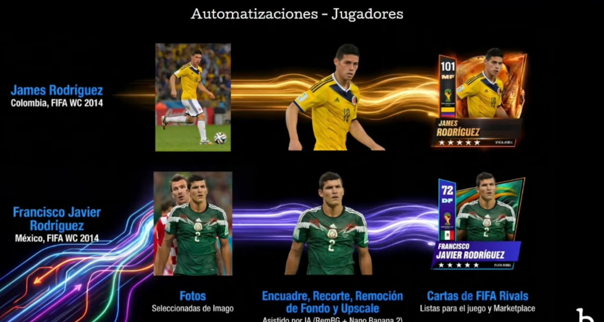
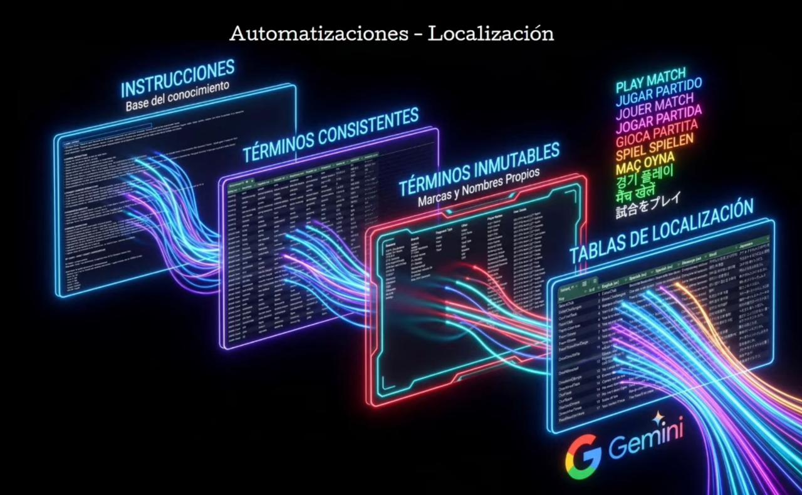

Implementación y Automatización de IA para la Producción de Videojuegos de Talla Mundial
Speakers: Alejandro González & Jairo Nieto (Bacon Games / Brainz)
Resumen y Análisis de la Charla
En esta charla explicaron cómo el estudio Bacon Games desarrolla videojuegos usando el modelo 'mid-core', que busca hacer juegos fáciles de entender para usuarios casuales pero con retos para jugadores competitivos. Compartieron su experiencia creando el juego 'FIFA Rivals' en solo 10 meses y con un equipo pequeño. Para lograrlo, usaron herramientas de inteligencia artificial como RemBG y Nano Banana 2, automatizando tareas como recortar imágenes, mejorar la calidad y quitar los fondos a las fotos de los jugadores. También automatizaron las traducciones del juego y mostraron cómo usan herramientas inteligentes (como Google Gemini 3 Flash y Pro) conectadas a Slack y GitHub para revisar el código de programación y corregir errores al instante.
Palabras Clave
`AI Implementation`, `Game Automation`, `Mid-core Gaming`, `Asset Optimization`, `Machine Learning Agents`, `Scalability`.
Evidencias


